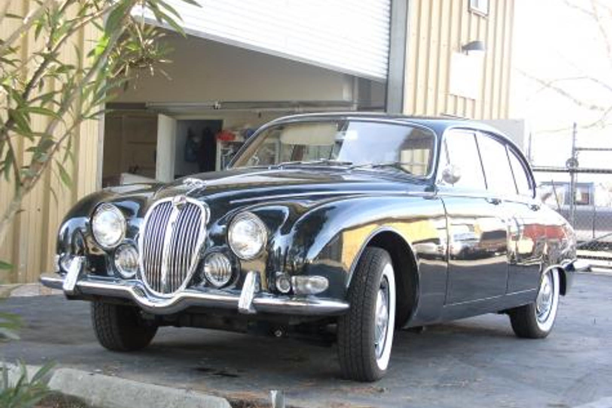

From the shop
Jaguar restoration
Union Jack restores classic Jaguars — XK120 through XK150, the E-Type, Mark 2 and S-Type — in San Martin, California. On an E-Type the sills are structural and the bonnet fit is the clearest sign of whether a restoration was done properly.

What we take on
Jaguars reward careful work and punish shortcuts. The difference between a good restoration and a quick one usually shows in the panel gaps.
Every project starts the same way: we look at the car, then write an estimate and a stage-by-stage worksheet before any work begins. You decide what is worth doing.
- XK
- XK120, XK140 and XK150
- E-Type
- Series 1, 2 and 3
- Saloons
- Mark 2, S-Type, 420 and XJ6
- Later
- XJS and XK8
What usually needs doing
Honest notes on where these cars go wrong, so you know what to look for before you buy one or bring it in.
- E-Type sills are structuralThe E-Type is a monocoque tub with a tubular front frame carrying the engine and front suspension. The sills are part of the structure. Cars restored without supporting the tub properly end up with doors and bonnets that never line up again.
- Bonnet alignment tells the storyThe E-Type bonnet is a large, complex assembly hinged at the front. Getting even gaps down both sides is slow, skilled work, and it is the first thing an experienced eye checks.
- Saloon sills, floors and rear valanceMark 2 and S-Type bodies collect water in the sills, floors and rear valance. There is also a great deal of chrome and brightwork, and sourcing or refinishing it is a real part of the budget.
- XK chassis and ash-free constructionXK120, 140 and 150 sit on a separate chassis, which makes a bare-frame rebuild practical. Early XK120s used some timber in the body structure, so it is worth establishing what a particular car actually has.
Jaguar work from the shop
The photograph above is a finished Jaguar at the San Martin shop — the whole car, in front of the building.
Jaguar questions
Straight answers, including the ones about cost.
Are Jaguar E-Type sills structural?
Yes. The E-Type is a monocoque tub and the sills form part of that structure, with a tubular front frame carrying the engine and front suspension. The tub must be braced before sills are cut out, or the door and bonnet gaps will never return.
How can I tell if an E-Type was restored properly?
Look at the bonnet. It is a large hinged assembly and getting even gaps down both sides takes slow, skilled fitting. Uneven gaps, or doors that need lifting to close, usually mean the shell was cut without proper support.
Do you restore Jaguar saloons as well as sports cars?
Yes. Mark 2, S-Type, 420 and XJ6 saloons come through the workshop. They rot in the sills, floors and rear valance, and they carry a lot of brightwork, which is a genuine part of the cost.
What does a Jaguar restoration cost?
It varies enormously between a mechanically sound car needing paint and a shell needing structural steel. We assess the car, then provide a written estimate and a worksheet broken down by stage before any work begins.
Other marques we restore
Bring us the car
Tell us what you have and what you want from it. We look at the car before quoting anything.